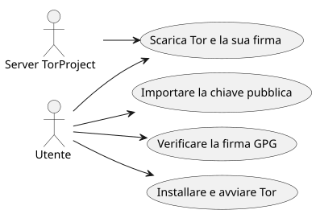
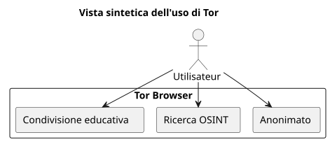

Installare e verificare Tor Browser su Ubuntu
Publié le 05 October 2025
Introduzione
In un mondo in cui la privacy digitale è sempre più minacciata, Tor Browser rimane uno strumento essenziale per preservare l’anonimato e la libertà di informazione. Tuttavia, è fondamentale non eseguire mai un software scaricato senza aververificato la sua autenticità. Questo articolo presenta un metodo completo per:
-
Scaricare Tor Browser e la sua firma`.asc`
-
Verificare la validità del file scaricato
-
Installare e avviare Tor Browser su Ubuntu
-
Aggiungerlo ai menu del desktop per un uso quotidiano
-
Esplorare risorse educative e OSINT etiche via Tor
Download di Tor e della sua firma
Crea una cartella dedicata per il browser Tor :
mkdir -p ~/workspace/tipiak/tor
cd ~/workspace/tipiak/torScarica poi l’archivio del browser Tor e la sua firma :
wget https://www.torproject.org/dist/torbrowser/14.5.7/tor-browser-linux-x86_64-14.5.7.tar.xz
wget https://www.torproject.org/dist/torbrowser/14.5.7/tor-browser-linux-x86_64-14.5.7.tar.xz.ascVerifica crittografica della firma
Questa fase èindispensabileper assicurarsi che il file scaricato provenga effettivamente dal Tor Project e non sia stato modificato
Importare la chiave pubblica del Tor Project
gpg --auto-key-locate nodefault,wkd --locate-keys torbrowser@torproject.orgVerifichi che la chiave sia importata correttamente :
gpg --list-keys torbrowser@torproject.org2. Verificare la firma
gpg --verify tor-browser-linux-x86_64-14.5.7.tar.xz.asc tor-browser-linux-x86_64-14.5.7.tar.xzSe tutto è corretto, verrà visualizzato il messaggio seguente :
gpg: Good signature from "Tor Browser Developers (signing key)"In caso di avviso di chiave non certificata, ciò significa semplicemente che non hai ancora firmato la chiave di fiducia del Progetto Tor, ma la firma rimane valida.
Esempio pratico: firma valida ma chiave non certificata
È frequente incontrare un messaggio come questo durante la verifica.
gpg --verify tor-browser-linux-x86_64-14.5.7.tar.xz.asc tor-browser-linux-x86_64-14.5.7.tar.xz
gpg: Signature faite le mar. 16 sept. 2025 14:26:26 CEST
gpg: avec la clef RSA CAAE408AEBE2288E96FC5D5E157432CF78A65729
gpg: Bonne signature de « Tor Browser Developers (signing key) <torbrowser@torproject.org> » [inconnu]
gpg: Attention : cette clef n'est pas certifiée avec une signature de confiance.
gpg: Rien n'indique que la signature appartient à son propriétaire.
Empreinte de clef principale : EF6E 286D DA85 EA2A 4BA7 DE68 4E2C 6E87 9329 8290
Empreinte de la sous-clef : CAAE 408A EBE2 288E 96FC 5D5E 1574 32CF 78A6 5729Questo messaggio indica che la firma è tecnicamente "buona" (il file non è stato alterato), ma il tuo sistema GPG non può certificare la fiducia nella chiave stessa. Per dissipare questo dubbio, è essenziale confrontare l’impronta della chiave principale (EF6E 286D DA85 EA2A 4BA7 DE68 4E2C 6E87 9329 8290) con quella pubblicata sul sito ufficiale del Tor Project.
Secondo il sito ufficiale, l’impronta attesa è :`EF6E286DDA85EA2A4BA7DE684E2C6E8793298290`.
Poiché l’impronta visualizzata da`gpg`corrisponde esattamente a quella del sito ufficiale, puoi essere certo che la chiave è legittima e che il file è sicuro. L’avviso di \"chiave non certificata\" è allora un’informazione sulla tua configurazione GPG locale, e non sulla validità della firma o sull’autenticità del file.
Perché verificare la firma ?
La verifica delle firme GPG è un atto fondamentale di sicurezza digitale. Permette di:
-
Garantirel’autenticitàdel software scaricato
-
Impedire l’installazione di un file compromesso da un attore malevolo
-
Partecipare allasovranità digitaleindividuale
-
Favorire una cultura digitale responsabile ed etica

Estrazione e avvio di Tor Browser
Estrai l’archivio scaricato :
tar -xvf tor-browser-linux-x86_64-14.5.7.tar.xz
cd tor-browserAvvia quindi il browser :
./start-tor-browser.desktopAl primo avvio, si aprirà una finestra di configurazione per stabilire la connessione alla rete Tor.
Integrazione al desktop Ubuntu
Per aggiungere Tor Browser nel menu delle applicazioni:
./start-tor-browser.desktop --register-appPuoi quindi :
-
Avvia Tor Browser dal menu delle applicazioni
-
Aggiungerlo ai preferiti del dock
-
Creare una scorciatoia da tastiera se desiderato

Esplora risorse educative con Tor
Tor non è solo uno strumento di anonimato. Costituisce un portale di accesso a risorse educative e di ricerca, in particolare nei settori di:
-
OSINT (Intelligence a sorgente aperta)
-
Condivisione educativa e open source
-
https://archive.org(accesso via Tor per maggiore riservatezza)
-
https://github.com/(consultabile via Tor)
-
https://librarygenesis.pro(accesso alla letteratura scientifica libera)
-
Trasmissione di conoscenza e comprensione dell’uomo nella società digitale
-
Risorse sulla cultura digitale, la libertà di espressione e l’accesso alla conoscenza
-
Documentazione libera sulla cybersicurezza e l’etica delle tecnologie
Aggiornamento di Tor Browser
Per garantire una sicurezza ottimale, è fondamentale tenere Tor Browser aggiornato. Il browser incorpora un meccanismo di aggiornamento automatico che può essere attivato dalla riga di comando.
Dalla directory di installazione di Tor Browser, basta rilanciare lo script di avvio:
cd ~/workspace/tipiak/tor/tor-browser
./start-tor-browser.desktopAll’avvio, Tor Browser verificherà automaticamente se esiste una nuova versione. Se è così, lo scaricherà e lo installerà per te.
Questo semplice metodo garantisce che tu disponga sempre degli ultimi aggiornamenti di sicurezza e delle migliorie più recenti, il che è essenziale per una navigazione sicura.
Conclusione
Controllare i propri download è un riflesso essenziale per chiunque voglia evolvere in un ambiente digitale sicuro. Installare Tor in modo verificato, èproteggere la propria integrità digitale, preservare la fiducia nel software libero, et rafforzare la sua autonomia informativa.
La sicurezza digitale è un atto di coscienza, non di paranoia.

Riferimenti
-
Sito ufficiale del Tor Project:https://www.torproject.org/download/[https://www.torproject.org/download/]
-
Documentazione di verifica delle firme :https://support.torproject.org/tbb/how-to-verify-signature/[https://support.torproject.org/tbb/how-to-verify-signature/]
-
Documentazione Ubuntu:https://ubuntu.com[https://ubuntu.com]
-
Archivio educativo:https://archive.org/details/opensource[https://archive.org/details/opensource]
|
Questo articolo fa parte della serie Sicurezza e Coscienza Digitale, volti a promuovere pratiche responsabili e pedagogiche intorno agli strumenti liberi. |
Articoli correlati
14 May 2026